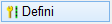
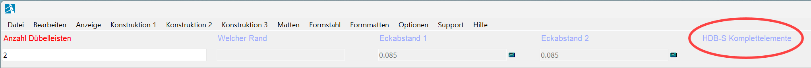
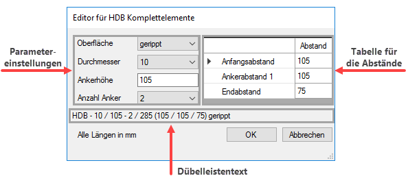

")
")

Definition der Art, Anzahl und Anordnung der Dübelleisten. Öffnet den Dialog Eigenschaften Dübelleisten.
Verwenden Sie die Optionen auf den herstellerbezogenen Registerkarten. Art, Anzahl und Anordnung der einzelnen Dübelleisten müssen mit externen Hilfsmitteln und nach gültigen Vorschriften ermittelt werden, z. B. mithilfe der Schöck Bole® bzw. Halfen HDB Bemessungsprogramme. Verwenden Sie stets die aktuellen Versionen.
Bestätigen Sie nach der Definition den Dialog auf der Registerkarte mit OK, auf der Sie die Dübelleiste definiert oder ausgewählt haben, und für die Verlegung verwenden möchten.
Der verwendete Dübelleisten-Typ wird Ihnen beim Verlegen im rechten Bereich der Abfragezeile angezeigt:

Eingabeparameter für die Schöck Bole® Durchstanzbewehrung.
Tragen Sie die ermittelten Werte aus der Bemessung in die entsprechenden Eingabefelder ein.
Bolzenhöhe [mm]
Wählen Sie aus der Liste die erforderliche Bolzenhöhe aus.
Bolzendurchmesser [mm]
Geben Sie den Durchmesser der Bolzen an. In Abhängigkeit von der Bolzenhöhe werden die Durchmesser vorgeschlagen.
Mit Sonderdurchmesser
Es können auch andere als die Standarddurchmesser gewählt werden.
Anzahl Bolzen
Geben Sie die erforderliche Anzahl ein.
Rasterschema
Es gibt fünf unterschiedliche Abstandsregeln für Flachdecken (A) und Fundamente (B-E).
Leistenlänge
Tragen Sie hier die erforderliche Länge ein.
Typ
Standard, O, U oder F
Betondeckung unten [mm]
Wählen Sie die Betondeckung unter den Bolzen aus.
Aus diesen Eingaben wird der Dübelleistentext generiert. Es wird auf jeden Fall ein korrekter Text zusammengestellt und eine Schöck Bole®-konforme Dübelleiste erzeugt.
Sollte die Dübelleiste nicht herstellbar sein, erhalten Sie einen entsprechenden Hinweis .
BOLE-Leiste aus Text
Text auswerten
Wenn Sie einen Text eintippen oder per Strg+V einfügen, der die typischen Leisteneigenschaften enthält (z. B. F 10/180-4/A520), generiert das Programm einen Dübelleistentext. Enthält der Text auch die Angabe der Betondeckung "CV" (z. B. F 10/180-4/A520-CV20) wird diese unter Betondeckung unten [mm] eingetragen. Das Einfügen der kompletten Produktbezeichnung (z. B. Schöck Bole U 12-260-4/A 720) ist ebenfalls möglich. Beim Auswerten werden die Texte "Schöck" und /oder "Bole" automatisch entfernt.
Klicken Sie auf die Schaltfläche, um den eingegebenen Text zu überprüfen. Wird der Text erkannt, dann werden die Parameter im Dialog übernommen. Sollte der eingegebene Text keiner BOLE-Leiste entsprechen, erscheint ein Hinweiszeichen .
aus Zeichnung
Sie können Linien oder Kreise von vorhandenen Dübelleisten (nur Schöck), nicht die Bezeichnung, in der Zeichnung anklicken. Wenn es sich dabei um korrekte Daten handelt, wird ein Dübelleistentext generiert.
|
Eingabeparameter für Halfen HDB-Elemente und Halfen HDB-S-Elemente.

|
Anmerkung:
|
|
Die folgende Dialogbeschreibung gilt für die Registerkarte Halfen HDB. Die Registerkarte Halfen HDB-S für die Querkraftbewehrung enthält identische Funktionen, und wird daher nicht gesondert beschrieben.
|
selbsterstellte HDB Komplettelemente verwenden

|
Angaben für die HDB Systemelemente (Standardeinstellung)
(s. HDB Systemelemente)
|

|
Angaben für individuelle Dübelleisten. Blendet den Bearbeitungsbereich HDB Komplettelemente mit weiteren Optionen ein (Rechtsklick im Bearbeitungsbereich).
(s. HDB Komplettelemente)
|
Bauteilfaktor
Geben Sie an, wie oft die komplette Durchstanzbewehrung in die Liste aufgenommen werden soll.
HDB Systemelemente
Nur wenn die Option selbsterstellte HDB Komplettelemente verwenden deaktiviert ist (Standardeinstellung).
nur Standardelemente
|
Zeigt sowohl Systemelemente in der Standardausführung (Standardelemente) als auch Bestellelemente mit fester Elementlänge an.
|
|
Zeigt nur Systemelemente in der Standardausführung an.
|
Ankerhöhe [mm]
Wählen Sie aus der Tabelle die erforderliche Höhe aus. Diese Tabelle enthält alle Maße der vorhandenen Elemente.
Ankerdurchmesser [mm]
Wählen Sie einen Durchmesser aus der Liste aus. Es stehen nur die zur Ankerhöhe passenden Durchmesser zur Verfügung.
Anzahl Anker
Geben Sie die erforderliche Anzahl der Anker an. In der Liste stehen nur Werte, die durch die Elementzusammenstellung vorgegeben sind.
Länge
Die Gesamtlänge ergibt sich aus der Elementzusammenstellung.
Elementzusammenstellung
Auswahl der Elementkombination.
Automatisch
Zweier- und Dreier-Elemente werden kombiniert.
nur Zweier-Elemente / nur Dreier-Elemente
Es werden entweder nur Zweier- oder nur Dreier-Elemente gewählt. Gegebenenfalls wird die Anzahl der erforderlichen Anker erhöht.
|
|
HDB Komplettelemente
Nur wenn die Option selbsterstellte HDB Komplettelemente verwenden aktiviert ist (Standardeinstellung).
Liste der individuellen HDB Komplettelemente. Wenn Sie noch keine HDB Komplettelemente erstellt haben, ist der Bearbeitungsbereich zunächst leer.
Um ein HDB Komplettelement zu erstellen oder zu bearbeiten
§Wählen Sie gegebenenfalls den gewünschten Eintrag in der Liste aus.
§Rufen Sie das Kontextmenü auf (Rechtsklick im Bearbeitungsbereich).
Funktion
|
Beschreibung
|
Neu
|
Konfiguration einer individuellen Dübelleiste. Öffnet den Dialog Editor für HDB-Komplettelemente.
(s. Editor für HDB Komplettelemente)
|
Kopieren
|
Der markierte Eintrag wird kopiert und in der folgenden Zeile hinzugefügt. Die Werte können durch Ändern angepasst werden.
|
Ändern
|
Bearbeitung des in der Liste markierten HDB-Komplettelementes. Öffnet den Dialog Editor für HDB-Komplettelemente.
(s. Editor für HDB Komplettelemente)
|
Löschen
|
Löscht den markierten Eintrag aus der Liste.
|
aus Zeichnung
|
Der Dialog wird vorübergehend ausgeblendet, damit Sie die Linie oder den Kreis eines HDB-Komplettelementes (nicht die Zeigerlinien) anklicken können. Wenn die Bezeichnung in das aktuelle Schema passt, wird sie in die Tabelle übernommen. Sie ist damit ausgewählt und kann direkt verlegt werden.
|
Sortieren nach
|
Sortiert die Liste nach dem gewählten Kriterium.
Durchmesser:
Die Dübelleisten werden, nach Durchmesser sortiert, aufgelistet. Die nachfolgenden Sortierkriterien sind Höhe, Anzahl, Länge und Oberfläche.
Höhe; Anzahl; Länge; Oberfläche:
Die Reihenfolge der Sortierkriterien ist immer gleich. Das ausgewählte steht jeweils an erster Stelle.
Durch wiederholten Aufruf eines Kriteriums wird die Sortierreihenfolge umgekehrt (Aufwärts/Abwärts-Sortierung)
|
Rückgängig
|
Die zuvor ausgeführte Aktion wird rückgängig gemacht.
|
Wiederherstellen
|
Das eben rückgängig gemachte wird wiederhergestellt.
|
Editor für HDB Komplettelemente (Dialog)
Konfiguration individueller Dübelleisten.

Oberfläche
Auswahl der Dübelleisten-Oberfläche - glatt oder gerippt.
Durchmesser
Wählen Sie den gewünschten Durchmesser aus der Liste aus.
Ankerhöhe
Geben Sie die Höhe der Anker in Millimeter ein. Die kleinste Höhe beträgt 105mm. Weitere folgen im Raster von 10mm. Wenn Sie Werte außerhalb des Rasters eingeben, rundet das Programm auf die nächst kleinere Rasterhöhe. Um in die nächste Eingabe zu gelangen, drücken Sie die Tabulatortaste F oder klicken Sie das gewünschte Eingabefeld an.
Anzahl Anker
Für die HDB Komplettelemente sind 2 bis 10 Anker möglich.
Tabelle für die Abstände
Wenn Sie bei Anzahl Anker den Wert ändern, werden die Abstände neu ermittelt und vorgeschlagen.
Geben Sie die erforderlichen Abstände in die entsprechenden Zeilen ein. Klicken Sie dazu einen Wert an (dieser wird blau hinterlegt) und geben Sie den neuen Wert ein. Bestätigen Sie mit der Eingabetaste. Um direkt zu Bestätigen und zum nächsten Wert zu wechseln, drücken Sie die Tabulatortaste F.
Beachten Sie, dass die Abstände geändert werden, wenn Sie die Anzahl der Anker ändern.
Dübelleistentext
Hier wird der generierte Text immer aktuell angezeigt.
OK
Klicken Sie auf OK, um die neu definierte Dübelleiste in die Tabelle aufzunehmen.
Abbrechen
Der Eingabedialog wird geschlossen. Alle Eingaben gehen verloren.
|
|
Bauteilfaktor
Geben Sie den Faktor für die Ermittlung der Gesamtanzahl ein.
OK
Drücken Sie auf OK, um die Eingaben zu übernehmen. Beim Schließen des Dialogs werden doppelte Einträge aus der Tabelle für selbsterstellte HDB- und HDB-S Komplettelemente entfernt.
Abbrechen
Klicken Sie auf Abbrechen, um die Eingaben zu verwerfen und mit den alten Einstellungen fortzufahren.
Zugehörige Aufgaben:
·Dübelleiste an einem Bauteil verlegen
·Dübelleiste am Rand verlegen
·Dübelleiste am Kreisbogen verlegen
·Dübelleiste an einer Ecke verlegen
Zugehörige Referenzen:
·Darstellung Dübelleisten